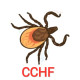

Crimean-congo hemorrhagic fever(CCHF)
نکات :
1- درمان قطعی براش وجود نداره . بیشتر درمان ساپورتیو (بالانس آب و الکترولیت ها، وازوپرسور،اینوتروپیک، ونتیلاسیون مکانیکی ، همودیالیز ) و جایگزینی خون در موارد شدید انجام می شود.
2- درصورت نیاز و پلاکت پایین تزریق پلاکت
3- در سطح مطالعات حیوانی ریباوارین به عنوان داروی آنتی وایرال استفاده شده.
4- در کیس های nonsevere معمولا علایم بین 7 تا 10 روز حل میشوند.
تشخیص های افتراقی :
سایر بیماری های خونریزی دهنده تب دار (ابولا، تب زرد و ...)
مالاریا ، ریکتزیا ،تب ، Q بروسلوز ،لپتوسپیروز ،مننگوکوکسمی
✳️شروع ناگهانی تب
✳️سردرد
✳️تهوع و استفراغ
✳️ضعف
✳️میالژی
✳️گلودرد
✳️گیجی
✳️کانژنکتیویت
✳️فوتوفوبی
✳️درد شکم
✳️تاکی کاردی
✳️لنفادنوپاتی
✳️هپاتومگالی
✳️خونریزی شبکیه
موارد شدید بیماری
▪️پتشی و اکیموز
▪️اپیستاکسی
▪️خونریزی دهان
▪️خونریزی های داخلی
▪️ملنا
▪️خونریزی واژینال شدید
1️⃣ Other viral hemorrhagic fevers:dengue, Ebola,yellow fever
2️⃣ مالاریا
3️⃣ بروسلا
Rickettsial infection 4️⃣
Q fever 5️⃣
Leptospirosis 6️⃣
7️⃣ تب عود کننده
8️⃣ هپاتیت وبروسی
9️⃣ مننگوکوکسمی
🔟 ITP
1️⃣1️⃣ لوکمی